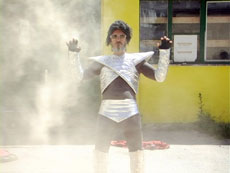

|
JOHNNY AMORE & THOMAS KOHLER
Supermorphose | D 2007 | 3’59’’
Format: DVD
Drehbuch: Thomas Kohler & Johnny Amore
Kamera: Thomas Kohler
Schnitt: Thomas Kohler
Dies ist die Geschichte von Johnny Amore und seine magische Verwandlung in etwas Großes...!
Johnny Amore, geb. 1973 in München. Studium an der Staatlichen Akademie für Fotodesign in München mit Diplom. 1998 fing Johnny Amore an Gedichte zu schreiben von simpler und trashiger Natur; er bezeichnet sie als Strassenpoesie.
2001 wurde der erste selbstkopierte Gedichtband "Szenen eines geistigen Verfalls" bei Treibhaus am Himmel veröffentlicht. Weißer Anzug,Cowboyhut,Cowboystiefel und eine Sonnenbrille-das ist das Erscheinungsbild des Johnny Amore in Live-Performances. Seit ca.8 Jahren wird diese Kunstfigur entwickelt: anfänglich alleine,dann expandierte sie 2004 und gründete eine Combo mit der Musiker und Künstlerin Relle Büst.
Ausstellungen (Auswahl): Superhero, Färberei, München 2008 | 1000 Faces of Underground, Raumar Art Museum, Raumar 2007 | Dachportraits, Färberei, München 2006 | Schürzenportraits, Färberei, München 2006 | Mambo Jambo Poa Fresh, Färberei, München 2004 | Tapetenwechsel, Färberei, München 2003
Gruppenausstellungen (Auswahl): Oktoberfest/Zwischenraum, Gasteig, München 2006 Motherland, Kunstvlaa6, Amsterdam 2006 Minibar+at Bunnyhill, Kammerspiele, München 2004 Cowboys, Designale, Messe München 2000
zurück
|